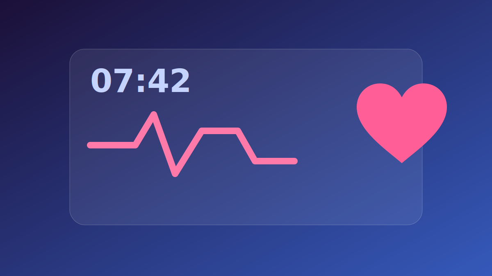
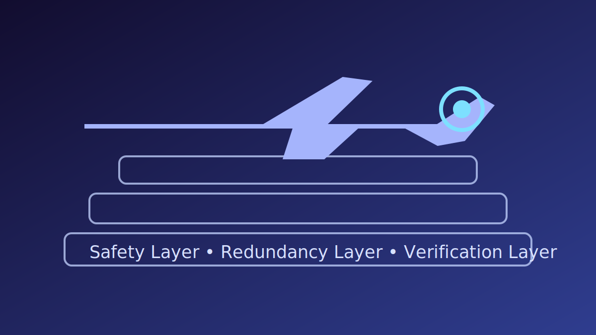
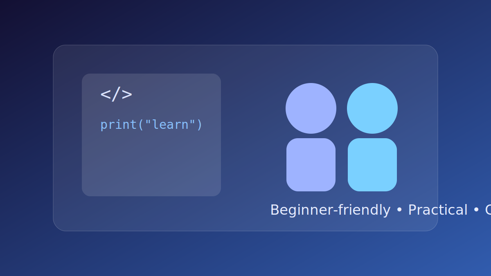

Full Stack Developer • Musician • Craftsman • Philanthropist
Timothy Christian Spurlin: A Life of Integrated Excellence
From the precision of code to the soul of music, from welding structures to building communities—explore a polymathic journey bridging technology, art, and service.
const profile = {
name: "Timothy Christian Spurlin",
alias: "Christian Kota",
domains: [
"Computer Science & Data Science",
"Natural Medicine 🌿 & Pharmacology 💊",
"Music & Production 🎵",
"Welding & Electrical ⚡",
"Community Wellness 🌍"
],
philosophy: "Full-Stack Humanity"
};
Journey of Resilience & Innovation
From early instability to technical leadership, this arc captures the formative chapters that shaped Christian Kota's empathy, adaptability, and mission-driven engineering.
The Forge of Resilience
Frequent school and home transitions in Georgia built high situational awareness and emotional discipline. Those formative years became the foundation for later leadership in high-pressure environments.
Watched the world change during 9/11 while in elementary school.
Adapted across foster care placements and evolving expectations.
Built a practical "method-to-the-madness" mindset through hardship.
Empathy Engine
Adversity evolved into deep interpersonal awareness. Christian's pattern recognition extends beyond software into human behavior, conflict de-escalation, and trauma-informed communication.
As a teenager, Christian launched an early e-commerce arbitrage model that turned constrained capital into momentum.
Initial Investment$800
Generated Revenue$2,000
Future Vision: Global Skill Transfer
The long-term mission is practical philanthropy: teaching programming and technical literacy in underdeveloped communities while building cross-cultural fluency.
Mandarin ChineseVietnameseSpanishRussian
The Polymathic Convergence
A comprehensive exploration of my integrated journey across science, industry, art, and community service. Navigate through each dimension of a life dedicated to building, creating, and serving.
Executive Summary: The Architecture of an Integrated Life
In an era of extreme specialization, my trajectory stands as a counter-narrative—a deliberate integration of disparate fields. From molecular welding to abstract algorithms, from emotional music to environmental advocacy, I embody the Renaissance ideal of the Homo Universalis.
🔬 The Scientist
Self-directed study in Computer Science, Natural Medicine, and Pharmacology combined with aviation software engineering and health-tech innovation. Creator of the Heart Monitoring Clock project integrating holistic wellness with technology.
🔨 The Craftsman
Master welder and electrician bridging digital-physical divide through practical skills that build infrastructure for resilient communities.
🎵 The Artist
Recording as Christian Kota across Indie Pop, R&B, and Dark Pop with a scientific approach to emotional resonance.
🧠 The Philosopher
Deep understanding of psychology, trauma recovery, and post-traumatic growth applied to community wellness and artistic expression.
🌍 The Philanthropist
Democratizing tech education, environmental advocacy, and building community through accessible knowledge and civic engagement.
⚡ The Integration
Creating "Full-Stack Humanity"—a blueprint for 21st-century renaissance thinking where all skills amplify each other.
The Technologist and Scientist
Academic Foundations: Computer Science & Health Sciences
My lifelong self-directed study in Computer Science, Natural Medicine, and Pharmacology (beginning 2010-2015) represents a holistic integration—mastering algorithms, complexity theory, and systems architecture alongside natural health sciences. This interdisciplinary approach shapes how I approach every domain, blending technological innovation with wellness.
Python
Data analysis, machine learning, automation of complex cognitive tasks
Web interfaces, making complex back-end logic accessible to users
Aviation Engineering: High-Stakes Problem Solving
As a software engineering intern at an aviation company, I learned the culture of High-Reliability Organizations where bugs aren't inconveniences—they're potential catastrophes. This instilled:
Zero-Tolerance Precision: Code must work the first time, every time
Redundancy and Safety: Systems designed to fail safely
Rigorous Testing: Every assumption verified against reality
Innovation: Heart Monitoring Clock
The Heart Monitoring Clock exemplifies my hardware-software synthesis:
Problem: Cardiovascular monitoring has low compliance due to friction
Solution: Embed sensors into a ubiquitous household object
Achievement: Sensor integration using electrician skills, data processing of biometric signals, intuitive user interface design
This project demonstrates my philosophy: Technology for Wellness—building tech to extend and protect human life.
The Industrial Craftsman
Welding and Electrical Work: The Logic of Matter
In an increasingly virtualized economy, my trade skills represent a radical act of grounding. These aren't merely "blue-collar" skills—they're foundational technologies of civilization.
⚡ The Electrician's Mindset
Electrical work requires visualizing invisible current flow, anticipating resistance, ensuring continuity. This mental model directly parallels software engineering—data flowing through logic gates.
Key insight: Understanding the physical substrate makes me a better software engineer. Code is ultimately the manipulation of electricity.
🔥 The Welder's Art
Welding is the art of permanent fusion requiring steady hand, metallurgy knowledge, and immense patience. A bad weld leads to structural failure—just like aviation software.
Philosophy: The welder, like the aviation engineer, cannot afford sloppiness. Precision is non-negotiable.
"Maker" Philanthropy
My industrial skills are vehicles for community service:
Infrastructure Repair: Being the electrician during neighborhood crises
Teaching Trades: Democratizing practical skills just as I democratize coding
Breaking Hierarchies: As a "Lifelong Learner & Welder," I dismantle classist separation of intellectual vs. manual labor
I model a life where one can read Plato and repair a circuit breaker in the same afternoon.
The Artist and Musician
Christian Kota: A Sonic Identity
Under the moniker "Christian Kota," I've cultivated a professional presence spanning Indie Pop, Pop Rock, Dark Pop, and R&B. This isn't a casual diversion—it's a disciplined parallel career.
🎵 "Reloj en Pausa"
🎵 "Made It Down to Texas"
🎵 "Warm Heart"
The Songwriting Algorithm: Data Science Meets Art
I apply the scientific method to creativity with my five-step methodology:
Start with a Theme: Define the core variable (Love, Heartbreak, Adventure) like a research hypothesis
Write Regularly: Daily discipline generates high-volume "raw data" of lyrics and melodies
Study Successful Songs: Reverse-engineer emotional impact, understand the "physics" of a hook
Maintain Authenticity: Validity check—does this accurately represent my internal state?
This structured approach produces art that is both technically proficient (engineer satisfied) and emotionally resonant (philosopher satisfied).
The Philosopher and Psychologist
Inner Child Work and Resilience
My work is deeply informed by understanding childhood trauma and resilience. I've integrated psychological insights into my public persona and artistic output.
🌱 Theory of Reparenting
Adults with childhood adversity often struggle with "negative introjects"—internalized criticism. My philosophy manifests through reparenting within the community.
Practice: Providing free education (tech skills) and validating emotions (music) offers the "supportive parent" archetype to my audience.
✨ Heightened Awareness
Trauma survivors develop heightened situational awareness and emotional detection abilities.
Application: Hyper-attuned empathy allows me to anticipate needs—creating "Effortless" guides for intimidated students, writing about "Beautiful Things" in ugly times.
Resilience and Growth
Trauma can lead to increased capacity for altruism and prosocial behavior. Instead of retreating into cynicism, I've expanded into philanthropy.
The Mechanism: Trauma breaks the self; healing rebuilds it stronger with pledge to prevent others' suffering
The Manifestation: Music heals emotional wounds, tech education heals economic wounds, environmental advocacy heals systemic wounds
The Neurology of Empathy
My dual career demands intense engagement of complementary brain systems:
Emotional Empathy (Artist): Amygdala processing raw emotion, vicarious experience
Cognitive Empathy (Engineer): Prefrontal cortex using logic to solve problems for others
"Full-Brain Integration" enables Retrospective Empathy—designing solutions that would have helped my younger self, thereby helping my current audience.
Community Impact and Philanthropy
Democratizing Technology: The Teacher
My most direct community contribution is technological education via platforms like YouTube, distributing high-value knowledge freely.
📚 The Curriculum
"Effortless PC Upgrades" (hardware maintenance)
"Introduction to Python" (software development)
Tech literacy for underserved communities
💡 Economic Impact
In the 21st century, coding and hardware literacy are keys to the middle class. By lowering barriers—using "Effortless" language—I'm fighting the digital divide.
Economic Philanthropy: Giving people the means of production (knowledge).
Environmental and Health Advocacy
Active civic participation through critical petitions:
Against Agent Orange/GMOs: Understanding the biochemistry of toxicity
As a scientist, my signature carries weight. This demonstrates holistic health philosophy: monitor the heart (the device) AND create healthy environments (the policy).
Building Community Through Art
My music platform serves as a digital community center where I encourage fans to share stories and engage directly.
Micro-Community: Creating spaces of belonging in an age of isolation
Addressing Invisible Harms: Open discussion of "Inner Child" themes provides validation, reduces shame
Vulnerable Leadership: Approachable persona invites reciprocity and connection
The Integration Effect
My diverse skill set isn't random—it's a toolkit for comprehensive community service. I create music to heal emotional wounds, teach skills to heal economic wounds, and petition governments to heal environmental wounds.
Side Story: Darker Chapters of My Life
This chapter holds the heavier memories—the moments that left scars and taught me survival. I am documenting them with AI-generated videos and visual scenes so visitors can understand the internal landscape behind my resilience.
I translate difficult memories into narrative prompts, then iterate with AI tools to recreate the emotion, setting, and symbolism of each moment. Every scene is part testimony, part art, and part healing record.
🫱🏽🫲🏾 Content Care
These stories can be intense. I include context and content warnings so people can choose when and how to engage. The goal is honesty without harm.
AI Video Vault
A curated library of darker life chapters recreated through AI. Replace each embed URL with your latest generated video links as your archive grows.
Chapter 01 — Fracture
A reconstruction of the first memory where fear became a permanent language in my nervous system. The visual style is intentionally fragmented to mirror recall under stress.
An AI-generated sequence about the years after the event—how hypervigilance, isolation, and rebuilding happened at the same time. This piece captures survival in slow motion.
Content Warning: trauma recovery journey
Chapter 03 — Night Drive
This scene focuses on dissociation and memory loops, using repeated camera passes and low light to mirror being mentally stuck in a moment long after it ended.
A recovery-focused piece where AI visuals track the transition from shutdown to self-trust. It is intentionally slower and quieter to reflect long-term healing instead of quick closure.
Content Warning: trauma themes with restorative framing
Memory Gallery (AI Stills)
A visual archive of still images generated from detailed recollections. These are not literal photos—these are emotional snapshots.
Storm Corridor
A recurring hallway memory where everything felt cold, distorted, and endless.
Shattered Dusk
An impression of the evening everything changed and trust felt impossible.
Return to Light
A visual note that healing is nonlinear but real; darkness did not get the final word.
Silent Room
A memory of emotional numbness where sound, time, and sensation felt muted.
Cracked Sunrise
The first hint of hope after prolonged darkness—fragile, inconsistent, but undeniable.
Creator Note
This side story tab is a living archive. As new AI-generated videos and memory visuals are produced, this section expands to document additional layers of my life with care, context, and artistic honesty.
Side Story Portal
This is the entry point to the darker chapters of my life. For the full archive of AI-generated trauma narratives, videos, and memory visuals, open the dedicated Side Story tab in Life Story.
Dark Chapters Archive
A structured body of visual stories built from difficult memories and presented with context, care, and content warnings.
AI Memory Lab
Experimental video and image reconstructions where memory, emotion, and technology are combined to process trauma through storytelling.
As Artificial Intelligence automates specialized cognitive tasks, the human capacity for synthesis—connecting unrelated fields—becomes the ultimate value. I'm "AI-proof" because I operate at the intersections: welding robot frames, coding neural networks, analyzing performance data, writing songs, and philosophizing about human impact.
Experience
Self-directed study in Computer Science, Natural Medicine & Pharmacology, aviation software engineering, professional music production, and master-level trades—building a full-spectrum skill set through lifelong learning and hands-on practice.
Craft
Whether it's code, metal, or melody—every domain receives the same rigorous attention to precision, beauty, and human impact.
Philosophy
Full-Stack Humanity: refusing fragmentation, maximizing surface area of impact, showing one person can contain multitudes.
Life Chapters
My Story Timeline
A deeper look at the chapters that shaped me—from childhood transitions to military discipline to building a post-service mission around education, creativity, and community impact.
Summary: A pivotal early memory where the world suddenly felt bigger and less predictable. September 11 became one of those formative events that shaped my understanding of safety, change, and connection.
Reflection: I learned that local lives are tied to global events, and that resilience starts with awareness. That early perspective still informs how I approach uncertainty and leadership today.
Summary: Time with Ms. Reba, Ms. Jeanie, and Mr. Jackie introduced me to different homes, expectations, and rhythms of daily life.
Reflection: Those years built adaptability and empathy. I learned to recognize how stability, kindness, and structure can completely change someone’s trajectory.
Summary: Living with Aunt Connie and Dave brought accountability, consistency, and a stronger foundation of family values.
Reflection: This chapter taught me that discipline can be an expression of care. It built the grit and follow-through I rely on in both technical and creative work.
Summary: Mentors like Mr. Key, Ms. Saunders, Mr. Harp, and Mrs. West helped shape my confidence and curiosity.
Reflection: Their guidance showed me how mentorship changes lives. It planted the seed for my own mission of teaching and uplifting others.
Summary: A period of experimentation—fashion, first ventures, early coding with Java, and building personal identity.
Reflection: I learned to take risks, iterate, and keep growing. Entrepreneurship and programming gave me tools for both independence and impact.
Summary: Air Force training and intelligence work demanded precision, composure, and reliable teamwork under pressure.
Reflection: Service sharpened discipline and situational awareness. It reinforced duty, adaptability, and commitment to something beyond myself.
Summary: I’m focused on teaching technology, learning languages, and building communities centered on growth and belonging.
Reflection: Every chapter now feeds one mission: transform lived experience into education, creativity, and meaningful support for others.
Grandpa Jim: The First Architect of My Empathy
Before foster care, school transfers, and survival mode, I learned unconditional love in Vienna, Georgia with Great-Grandma Betty Merle Byrum and Great-Grandpa Jim. He gave me my earliest sense of stability, pride, and care.
The Garage Lessons That Never Left Me
I was Grandpa Jim's little assistant in the garage while he worked on the lawnmower. I loved sitting on his lap while we mowed, and I was always amazed when he'd chug a small Sunny D bottle in one huge gulp. Those simple rituals taught me that love can look like everyday presence, patience, and shared work.
When Jim suffered a fatal stroke while working on that same mower, it shattered our family. Even now, his memory shapes how I show up for people: steady, useful, and all-in.
How Grandpa Jim Influenced My Life
Stability: He gave me a safe emotional anchor before life became turbulent.
Hands-on curiosity: Watching him tinker planted the seed for my maker mindset across coding, welding, and engineering.
Service through action: He modeled that love is proven through practical care, not just words.
Lifelong remembrance: I still carry him in my daily life and in the values I build everything on.
A Memory I Carry Forward
This video captures Grandpa Jim holding me as a baby. It's more than a memory—it's a reminder of where my empathy began. The way he cared for me became the blueprint for how I try to treat people in every part of my life.
Notable Projects
Explore a visual project hub featuring health-tech, aviation, music, education, and an in-depth smart drone concept page with separated assistant uses vs. Drone Wars game mode, plus architecture, AI systems, safety engineering, and media documentation workflows.

❤️ Heart Monitoring Clock
Embedded health-tech system combining clock utility, heart-rate sensing, preventative alerting, and intuitive local dashboards for everyday wellness monitoring.

✈️ Aviation Software Engineering
High-assurance aviation software practices: deterministic behavior, redundancy, strict testing regimes, and safety-first architecture for mission-critical reliability.
🎵 Christian Kota Music Platform
End-to-end creative production system spanning songwriting, arrangement, mixing, release strategy, analytics, and audience engagement across streaming platforms.

📚 Tech Education Initiative
Accessible learning pathways that break down PC upgrades, coding fundamentals, and practical troubleshooting into beginner-friendly, confidence-building curriculum.
My AR glasses project is formally branded as AR Glasses, with a dedicated flagship implementation named TelePrompt Glass. TelePrompt Glass is the long-form AI glasses platform in this portfolio: a live communication system designed to improve clarity, confidence, and memory support in everyday conversations for people who are deaf or hard of hearing.
Live UnderstandingAudio + lip-inference subtitle fusion keeps dialogue visible in real time.
Human-Centered MemoryContext cards surface names, commitments, milestones, and preferred communication style.
Trustworthy ControlPrivacy-first data boundaries, adjustable overlays, and user-owned comfort settings.
TelePrompt Glass Has Its Own Full System Profile
To make this clear across the site: TelePrompt Glass is not a small bullet point under AR. It is a complete AI product profile with dedicated architecture, interaction loops, accessibility strategy, and measurable social outcomes. The tabs below break the system into deep, readable chapters so visitors can explore design intent, technical flow, and real-world user impact at a professional level.
TelePrompt Glass Platform Vision
TelePrompt Glass is intended to reduce communication friction in classrooms, healthcare conversations, workplaces, transit, and social gatherings by placing contextual understanding where attention already lives: directly in-view. The platform is designed around dignity. Instead of asking users to constantly look down at phones or chase fragmented transcripts, it keeps conversation flow continuous with stabilized captions and contextual support.
The long-term goal is to turn communication support into calm infrastructure: something dependable enough that users can focus on relationships, not tools. That means clear typography, low-latency subtitle rendering, controlled visual density, and trust-preserving memory behavior where only high-value, user-approved details become part of a persistent context profile.
Conversation Retention Target
Goal: preserve more than 95% of actionable dialogue in noisy, fast, or multi-speaker environments.
Attention Efficiency
Lower eye-travel overhead versus phone-first caption workflows by anchoring text near active speaker zones.
Confidence in Follow-Up
Relationship-aware reminders improve follow-through on names, appointments, promises, and care notes.
AI Architecture and Runtime Intelligence
TelePrompt Glass runs a multimodal pipeline that fuses speech-to-text, lip-reading inference, speaker localization, and semantic memory retrieval. Confidence blending allows the system to remain stable when any one signal channel degrades. The architecture also separates short-term conversational buffer memory from long-term semantic profile memory to reduce noise and improve governance.
01
Capture Layer
Directional microphones and camera frames collect synchronized communication signals.
02
Fusion Engine
ASR and visual phoneme streams are merged with confidence weighting and temporal alignment.
03
Context Layer
Entity extraction and semantic ranking surface relevant identities, commitments, and reminders.
04
AR Delivery
Adaptive overlays render concise subtitle chunks, status badges, and optional memory nudges.
Architecture Priorities
Low-latency interaction: Real-time transcript chunking with punctuation smoothing and continuity carry-forward.
Resilience in noise: Multi-speaker disambiguation with fallback modes for difficult acoustic conditions.
Edge + cloud flexibility: Critical subtitle path can remain local while heavier analytics are deferred safely.
Mermaid Graphs + Visual System Mapping
Below are long-form Mermaid diagrams documenting the TelePrompt Glass model. These diagrams are included as source-ready architecture artifacts for planning, documentation, and team handoff.
flowchart LR
A[Audio Stream] --> B{Fusion Confidence Engine}
V[Visual Lip Stream] --> B
B --> C[Latency-Aware Subtitle Builder]
C --> D[AR Overlay Renderer]
D --> E[User View]
B --> F[Speaker ID + Tracking]
F --> G[Context Card Selector]
G --> D
E --> H[User Feedback Signals]
H --> I[Adaptive Personalization Loop]
I --> C
I --> G
graph TD
U[User Consent Settings] --> M[Memory Policy Manager]
M --> S[Short-Term Session Buffer]
M --> L[Long-Term Semantic Memory]
S --> R[Real-Time Recall Candidate]
L --> R
R --> Q{Relevance + Sensitivity Filter}
Q -->|Pass| O[In-View Reminder Prompt]
Q -->|Hold| P[Silent Archive]
O --> X[User Confirmation]
X --> L
Signal Stability Profile
Primary channel: audio ASR in clear speech contexts.
Fallback channel: visual phoneme reinforcement in high noise.
Output shaping: subtitle cadence tuned for human reading speed.
Governance Visibility
Per-person memory permissions and expiration controls.
Session snapshots with reversible retention actions.
Explicit user override for profile prompts and nudges.
Audit-friendly events for design-time trust reviews.
UX, Accessibility, and Human Factors
TelePrompt Glass is intentionally designed for readability first. Caption segments are concise, contrast-safe, and spatially anchored to reduce cognitive load. Interface density scales dynamically based on context: high urgency can show stronger prompts, while casual social moments stay visually lightweight. The result is a system that helps without dominating attention.
Traditional Mobile Captions
Frequent downward gaze breaks conversation flow.
Higher chance of missing turn changes and facial nuance.
Context memory often lives in scattered external notes.
TelePrompt Glass In-View Model
Speaker-anchored subtitles maintain eye contact and timing.
Context cards and reminders appear only when relevant.
Dignity-forward support reduces fatigue over long interactions.
Accessibility and Trust Commitments
Reduced-motion support: overlay transitions remain minimal and can be simplified further.
Custom display controls: subtitle size, position, density, and contrast are user adjustable.
Inclusive defaults: tuned for multilingual dialogue, variable speaking pace, and mixed acoustic spaces.
Roadmap, Deployment Strategy, and Scaled Impact
The TelePrompt Glass roadmap is structured in stages: pilot reliability, domain adaptation, and community-scale rollout. Pilot cohorts focus on transcript quality, latency stability, and user comfort. Domain adaptation then tunes models for settings like clinics, classrooms, and service counters. Scaled rollout includes training materials and implementation playbooks for organizations that want practical assistive AI rather than prototype demos.
Phase 1 — Reliability Pilots
Measure subtitle continuity, speaker anchoring precision, and usability under real conversational pressure with iterative updates.
Phase 2 — Domain Tuning
Adapt terminology and context profiles for healthcare, education, workplace coordination, and multilingual public interactions.
Phase 3 — Operational Scale
Deliver deployment kits, onboarding guides, and trust governance frameworks for institutions and community organizations.
Phase 4 — Ecosystem Growth
Expand with open documentation, partner integrations, and accessibility-led product stewardship to sustain long-term impact.
Strategic Outcomes
For users: stronger independence, lower stress, and better conversational participation.
For teams: improved communication quality with less repetition and fewer missed details.
For inclusive innovation: a concrete model for responsible AI glasses in daily life, not just lab demos.